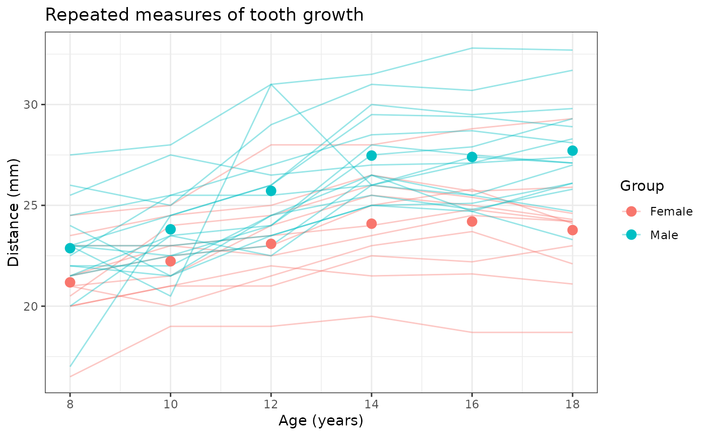
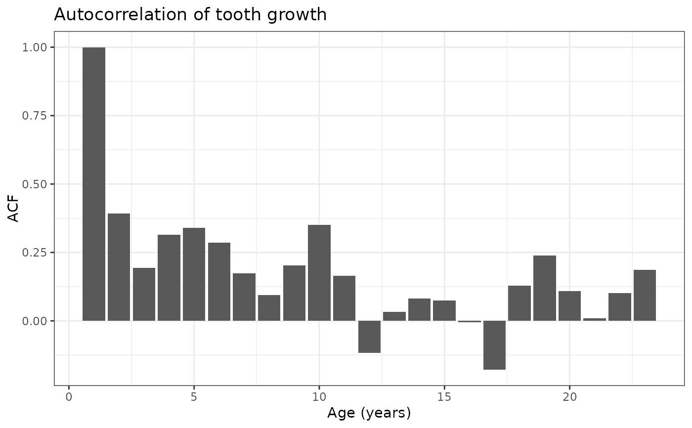

Plot repeated measures and autocorrelation
plot.RdPlots repeated measures and averages over time, well as autocorrelation between those measures calculated with acf(). Returned ggplot objects may be further manipulated (to multiple facets, with additional layers, etc.). Data must be in long format.
Examples
library(ggplot2)
# Load repeated measures of adolescent tooth growth (must be of long format)
data <- read.csv("https://raw.githubusercontent.com/alejandroh3005/modelLong/main/data/ortho.csv")[-1]
# Plot the repeated measures and autocorrelation
plot_res <- modelLong::plot(
data = data,
outcome = "distance",
time = "age",
id = "Subject",
group_var = "Sex")
#>
#> Attaching package: ‘dplyr’
#> The following objects are masked from ‘package:stats’:
#>
#> filter, lag
#> The following objects are masked from ‘package:base’:
#>
#> intersect, setdiff, setequal, union
# View repeated measures plot
plot_res$data_plot +
# Adjust labels and x-axis
labs(title = "Repeated measures of tooth growth") +
xlab("Age (years)") + ylab("Distance (mm)") +
scale_x_continuous(breaks = seq(8,18,2))

# View autocorrelation plot
plot_res$acf_plot +
# Adjust labels
labs(title = "Autocorrelation of tooth growth") + xlab("Age (years)")
